|
三日目の途中でありますが、バスは知床峠から下りに入り アイヌ語の『シリ・エトコ』（地の突出部）を語源とする知床は、ヒグマをはじめエゾ鹿やキタキツネなどの野生動物が多数生息している、原生のまま残された地で『世界自然遺産』として登録されています。 野生動物が沢山いると聞いて、私たちはランランと目を輝かせて両側の山林に目を注ぎますが、誰も と叫ぶ人もなく、熊も鹿も出てこないとなると…と、と準備されたガイドさんの案内は『トド松』と『エゾ松』の違いとなり、その見分け方は枝先が上を向いているのがトド松で、下を向いているのがエゾ松だそうで、雪が被さっていたりして枝先が見えないときは、幹が白くてすべすべしているのがトド松で、黒くてざらざらしているのがエゾ松だと判るのだそうです。 結局道路の端を歩いている人間以外は何も見つからず、バスはウトロ側に下ってきてしまい、『知床観光船』の乗船時間には早すぎたようで、翌日行く予定であった【オシンコシンの滝】へ向かうことになりました。 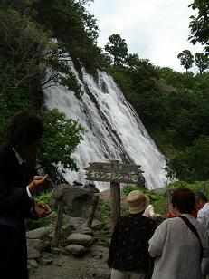 右へ曲がれば行きたかったけれどもコースに入ってなかった知床五湖。 知床横断道路から左に折れて暫く行くと、道路の端に生えている大きなイタドリの中に身を寄せるようにエゾ鹿がいて、ドライバーさんも心得たものでノロノロ走行に… ウトロ港を通り過ぎると【オロンコ岩】【ゴジラ岩】【トッカリ岩】【ふたつ岩】などが見られ、ゴジラ岩はそのものズバリ横から見るとゴジラの形をしており、アザラシがいるように見えるのがトッカリ岩です。 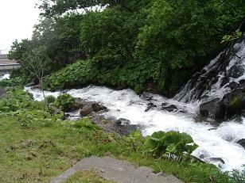 その昔訪れた時にはチョロチョロとしか流れていなかったオシンコシンの滝は、近づくとドウドウと音が聞こえるほど水量が豊かで、階段を登った滝つぼの近くではしぶきが雨のように降りかかり、滝全体を入れての記念写真はとても無理というくらい滝の幅が広くなっていました。 海へと注ぐ滝つぼからの流れも、ご覧の通り白い急流となって一気に海まで流れ込んでいました。 オロンコ岩の説明がまだありませんでしたが、この岩はウトロ港の観光船乗り場へ行く途中にトンネルが掘られており、駐車場から眺めるとその上には数え切れないほどのカモメ（ウミネコもカモメも区別できない σ＾ｍ＾；）が集まっており、どうやらここが住処になっているようです。 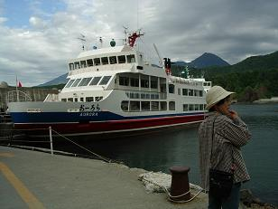 これが私たちの乗った観光船『おーろら号』で、定員４００名 総トン数４９１トンの大型観光船です。 この船は、冬場は網走港に移動して流氷観光の『砕氷船』となって運航されるのだそうで、まだ一度も流氷ツアーに参加したことのない私たちにとっては、憧れの船になっています。 さていよいよおーろら号に乗り込み、二手に分かれたもののなんとか半島の見える側に席を確保しましたが、私とトウモロコシさんは窓際から離れた中央の席となってしまい、こんなところからガラス越しの風景写真では何がなんだか解らなくなりそう…とばかりにデッキに出ることにしました。 私たちが乗り込む前にも船の上の方に止っていたのですが、カモメが船について飛んできていたようで、後部デッキに出ると思っていた以上に大きく羽を広げたカモメが、餌をねだるようにすぐ目の前に飛んできて去っていきました。 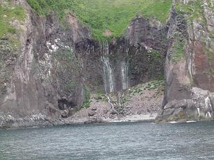 私たちの乗った船は『硫黄山航路』という１時間３０分コースのもので、陸上では知床五湖を経て知床大橋までできている道路に沿って進行し、道路の終着地となっている知床大橋のあたりから引き返すというもので、知床半島の先端（知床岬航路＝３時間４５分）までは行きません。 写真は船員さんが「さっきまで熊がいた」と教えてくれた場所ですが、目を皿のようにして探したのですが熊どころかアザラシも鹿もいませんでしたが、海からなだらかに続いている奥に草の生えたスペースが広がっており、高い崖で囲まれた人には踏み込めない領域のように見えました。 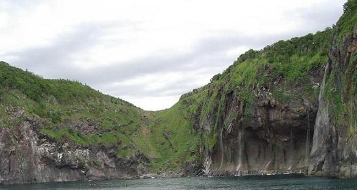 これは【男の涙】と呼ばれる滝です。（写真右側のえぐれたところ） 男の涙とくれば勿論乙女の涙もあり、どちらかと言えば乙女の方が知名度は高いようで、【フレペの滝】と呼ばれているのがそれです。 しかしこの滝は、説明だけは船内アナウンスで聞いていたのですが、撮影場所を求めて移動中でカメラに収める事ができませんでした。（＝＝； 乙女の涙は上からでも見る事ができるそうですが、別名『湯の華の滝』ともいわれる男の涙はそうは人に見せられないと言うのか、熊が出没したり滝までの崖道を降りるのが危険であることから立ち入り禁止となっており、現在は海側からしか見る事ができないのだそうで、乙女の涙と同じように断崖から染み出た清水が海に落下しています。 男の涙は人知れず激しく流れることがあるのか、滝の下は大きくえぐれてしまっておりますが、滝の水が風に散っていくことから男の涙とされたのだそうです。 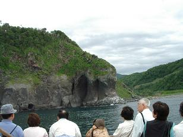 お次は【クンネポール】という波と風に浸食されてできた穴で、このように少しずつ削られて下のような深い穴になっているものもありました。 知床峠から下りて来て右へ進んだ道路を走る車が船からもチラチラ見えていましたが、丁度この辺りから山側へ入っていくと【岩尾別】という温泉があり、エゾシカなどの野生動物も姿を見せる原生林に囲まれた、秘湯っぽい露天温泉になんと無料で入れるのだとか… 個人グループで行くにはこんなところに泊まるのもいいかもしれません。 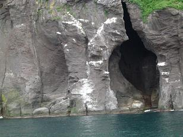 この岩尾別から８km 弱で知床五湖へ行く事ができますが、五湖の名称は『一湖』『二湖』『三湖』…となんともわかりやすいもので、全部を見て周ると１時間くらいかかるのだそうですが、一湖と二湖だけを３０分で巡ることもできるそうです。 湖に山々が写ってとてもきれいらしい… 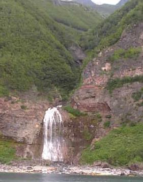 写真は【カムイワッカの滝】で、私たちの乗ったおーろら号はここでＵターンします。 五湖からもう少し先の【知床大橋】の間に、全国的に知られる秘湯【カムイワッカ湯の滝】というところがあるのですが、この湯の滝から流れてくるのがこのカムイワッカの滝です。 もしこの記事を読んで「行ってみよう！」と思われた方のために書いておきますが、現在落石防除工事のためシャトルバスは２００６年７月１３日～９月２０日までの間だけ運行されており、９月２０日以降（工事終了期日は不詳）は知床五湖までしかバスは運航されておりませんので、詳しい情報を調べてから行かれることをお勧めします。 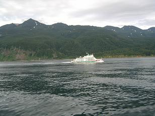 また、一般車両は五湖までしか行く事ができず、そこから先へ進むために駐車場に車を置いてシャトルバスには乗車できないそうなので、ウトロまたは知床峠からウトロ方面へ下った三叉路近くの駐車場に車を預けてバスに乗って行くのがいいでしょう。 知床連山は左つくんと尖っているのが１５６３ｍの【硫黄山】で、活火山であるここからカムイワッカの温泉が流れてきます。 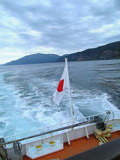 パシャ！パシャ！と写真を撮りまくっていたらクンネポールのあたりでデジカメが電池切れとなり、１２５４ｍの【知床岳】と半島の先端である知床岬をなんとか携帯のカメラに収め、おーろら号はウトロ港へと引き返して行きます。 トウモロコシさんは私に付き合ってずうっと吹きっさらしのデッキにいたのですが、最初に確保した席に戻ってみるとまくわうりさんが気持ち良さそうに寝ており、水菜さんの姿が見えません。 可哀想に…一緒に座っていた相棒が寝てしまって一人寂しく何処かで景色を見ていたのでしょう。 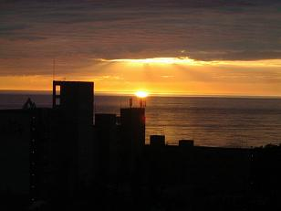 おーろら号から下船し、港から少し行った小高い丘の上にその日泊まるホテルがありました。 入り口に日の出と日の入りの時間が記してあるだけに、広々としたホールから海に沈む夕日がきれいに見えており、 部屋のキーを受け取って二階に上がり、部屋番号を数えながら片側に駐車場の見える廊下を進み、ドアを開けてびっくり!! まるで前日のお粗末な宿の埋め合わせをするかのように、入り口から一面ガラス張りの窓までがと、遠い…！ ドアから入った左手には広く取ったフローリングになっており、バスルームとトイレがありました。 全部で３０畳…いやいや、もっと広かったかもしれませんが、あまりにも広すぎて数える気にもなりませんでした。（＾ｍ＾； 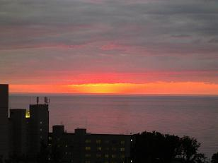 さて夕日は…というと、私たちの部屋から見ると写真上の高いホテルに隠れてしまって、ホテルが後光を発しているようにしか見えず、こりゃいかんがな…とばかりにカメラを片手に一階のラウンジまで行き、何枚かの写真を写して部屋に帰ってくると、夕日は写真上のように移動しており、私は一体何のために一階まで行ったのか…（ _w_； 上はオホーツク海に沈みかけた太陽で、下は沈んだ太陽です。 お風呂は修学旅行の学生さんたちが入るということで、一時間くらいの間制限されましたが、大展望が開けた大浴場で勿論サウナや露天風呂・電気風呂・打たせ湯・寝湯・薬湯・冷水…と設備も満点。 夕食も朝食もバイキング。 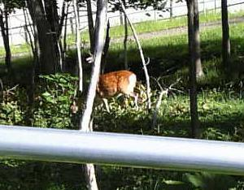 
翌朝朝食前に、まだカメラに収めていない鹿の姿を求めて、ホテルの近くを歩いてみました。 他所から来た私たちは珍しくて探してしまう鹿ですが、地元の人にはそれほど珍しくもないようで、家々にある花壇は鹿の侵入を阻む網で囲ってありました。 「あっという間の４日間だったね」 坂道を下りウトロ港を通り過ぎ、バスは海岸沿いを走って予定ではこの日立ち寄るはずであったオシンコシンの滝を通り過ぎ、更にオホーツク海を右手に見ながら進みます。 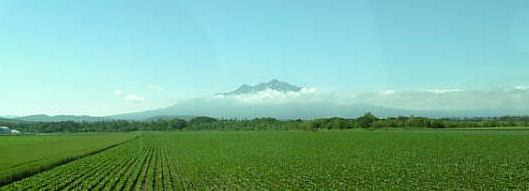 いつの間にか海が見えなくなり、代わってＪＲの単線が右手に付きつ離れつ続き、左手には斜里岳が雲の上から頭を覗かせていました。 小清水という交差点のあたりから、左手に原生花園が広がり別名『白鳥の湖』とも呼ばれる【涛沸湖】（とうふつこ）が見え始めます。 原生花園というと一面に花が咲いているものとばかりに思っていたのですが、当たり前のことですがその時期その時期で咲く花も様変わりして、遠くのバスの中から見ていてはわからないような小さな花もあって、自分で足を踏み入れてみなければその良さはわからないものだと今回初めて知りました。 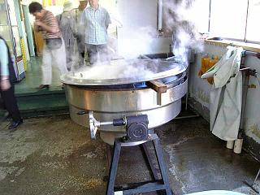 網走に入ってバスは一軒の店の前で止まり、お定まりの買い物を兼ねたトイレ休憩です。 発泡スチロールの箱にカニが入ったものが並べられているばかりで、いかに新鮮！獲れたて！と連呼されたとて、試食も匂いさえも嗅がせてくれないのではお客の心はつかめませんよ。 それでも２～３人の人がお買い求めになったようですが、帰り際にもうもうと湯気を立てていた釜の蓋が開けられ、カニではない他の何かであったのを見てしまい、これでは匂いもしないはずだ…（＾ｍ＾； んな、かさばるもの持って帰れますか… 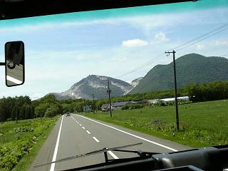 カニ専門店からまた来た道を少し引き返し、オホーツク海とはお別れをして内陸部に入り、２８年前には白い山肌に植物らしきものはほとんど見えなかった硫黄山は、今では少し土色になった部分も見えて緑も増えているのをあらゆる方向から眺めながら、昼食のための店に到着。 この日は赤い粒粒のイクラがたっぷり乗ったご飯のお弁当で、天ぷらや野菜の煮物がきれいに盛り付けられておりました。 お腹がいっぱいになっても、集合時間まではたっぷり余裕がとってあり、どこにも行くところもなく広いみやげ物売り場をうろうろ… カニなら両親も食べられるなぁ… ちなみに、いくら我が家全員がカニ好きだからといって、２ｋｇはさすがに多過ぎて残すわけにもいかないので近所に 集合時間になってみると、誰しもが両手にみやげ物の袋を提げてバスに乗り込んで来て、やっぱりな…という感じでした。 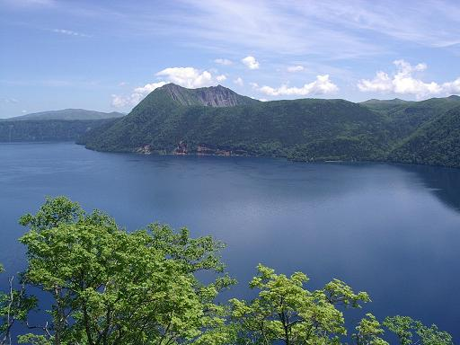 最後の観光地である摩周湖です。 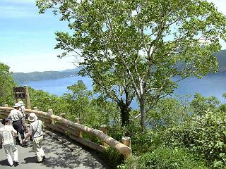 ご覧くださいこの湖の青さ。 裏摩周湖の眺めはこちらにあります。 左の写真はレストハウスの近くから見た湖で、見る位置によって水の色が少し違って水色に見えます。 ということで、今回の旅行日程はすべて終了し、来た時とは違って釧路空港から飛び立って帰ってまいりました。 作成:2006-10-29 コメントはこちら

|